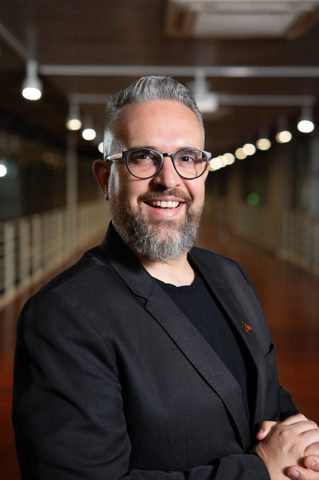
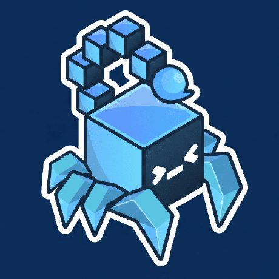
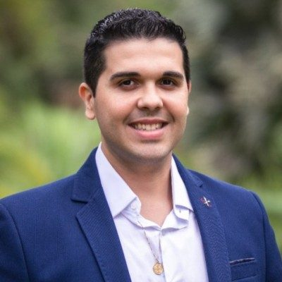
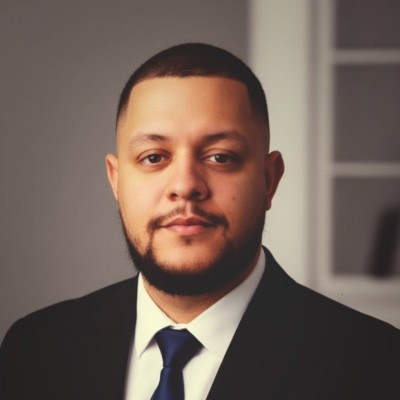
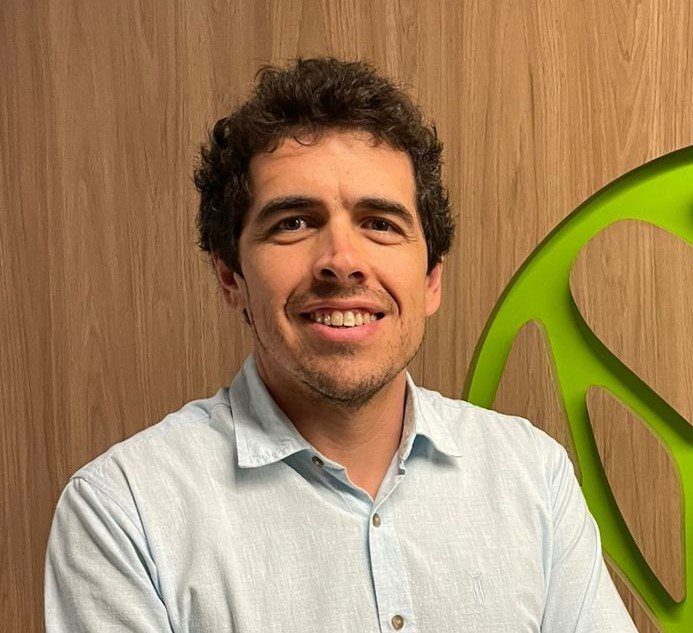
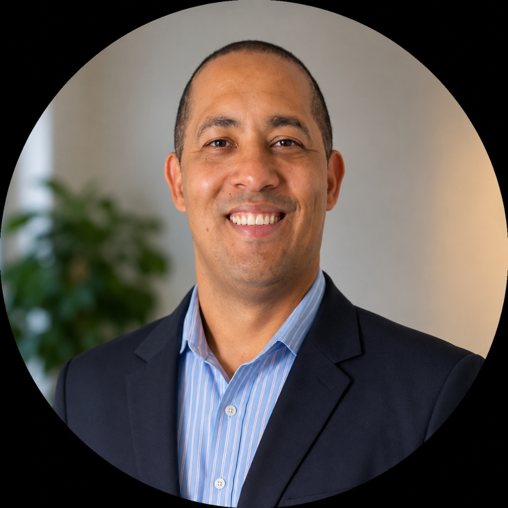

Jefferson Santana
Game Design
IFSP · Câmpus Araraquara
26, 27 e 28 de outubro
Três dias de palestras e mini-cursos com profissionais e instituições da área de tecnologia, abertos a alunos do IFSP e ao público externo.
A Semana da Informática é um evento tradicional do IFSP, realizado em diversos câmpus do instituto, que reúne palestras, mini-cursos e mesas-redondas voltados à comunidade acadêmica e ao público externo. O objetivo é aproximar estudantes de profissionais e empresas da área de tecnologia, compartilhando tendências de mercado, novas tecnologias e oportunidades de carreira.
Na edição 2026 do Câmpus Araraquara, o evento acontece nos dias 26, 27 e 28 de outubro, com programação organizada por uma comissão de alunos sob orientação de um professor responsável.
A grade de palestras está completa! Todas as palestras acontecem no Auditório do IFSP Câmpus Araraquara.
Jefferson Santana
Auditório · IFSP Câmpus Araraquara
Scorpion Bits
Auditório · IFSP Câmpus Araraquara
Daniel Mendes
Auditório · IFSP Câmpus Araraquara
João Paulo Machado Vieira — Executivo de TI e Cibersegurança
Auditório · IFSP Câmpus Araraquara
Isaias Silva — Docente (SENAC) e Desenvolvedor Fullstack (Simworx)
Auditório · IFSP Câmpus Araraquara
Bruno Silvestre
Auditório · IFSP Câmpus Araraquara
Com ex-alunos do IFSP
Auditório · IFSP Câmpus Araraquara
Igor Sasaki
IFSP Câmpus Araraquara
Ivo C. Neto — Docente SENAI Especialista em Desenvolvimento Front-end
Auditório · IFSP Câmpus Araraquara
Comissão Organizadora e convidados
Auditório · IFSP Câmpus Araraquara
Todos os mini-cursos têm duração total de 3 horas, organizados no seguinte formato:
• 26/10 e 27/10 (Segunda e Terça): Mini-cursos sem temática de IA, divididos nos dois
primeiros dias com duração de 1h30 por dia (Manhã: 10h10 – 11h40 · Noite: 21h – 22h30).
• 28/10 (Quarta): Mini-cursos voltados à temática de IA, concentrados no
último dia com duração de 2h30 (Tarde: 15h – 17h30).

Game Design

Mercado de Trabalho em Jogos
Estúdio de desenvolvimento de jogos formado por alunos do câmpus.

Desafios em Cibersegurança no Ambiente Digital
Executivo de TI e Cibersegurança.

Me formei, e agora? Entendendo o mercado tech e conquistando seu primeiro emprego como desenvolvedor
Do backlog ao Pull Request: agentes de IA no ciclo real de desenvolvimento de software
Engenheiro de Software Fullstack na DIO

Mudar de rota, transformar o jogo — carreira, tecnologia e transformação digital no campo

Do Currículo ao Portfólio de Impacto: Aplicando UX, Engenharia e Tomada de Decisão em Projetos Reais
O evento é gratuito e aberto a alunos do IFSP e ao público externo. A inscrição é necessária para garantir sua vaga e pode ser realizada pelo SUAP — o preenchimento é simples e leva menos de 2 minutos.
Clique no botão abaixo para acessar o formulário de inscrição no SUAP. A inscrição é única para todos os participantes — alunos do IFSP e público externo.
Acesse o formulário de inscrição pública pelo SUAP. Tanto alunos do IFSP quanto participantes externos devem se inscrever por este link.
Fazer inscrição